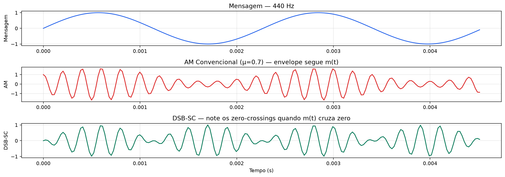
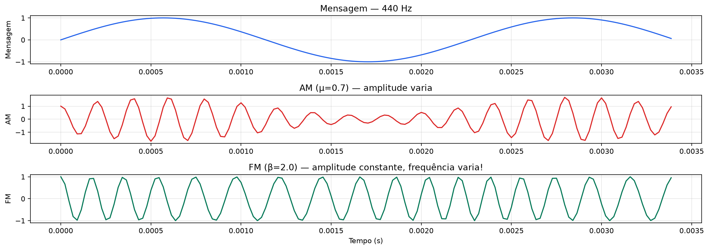
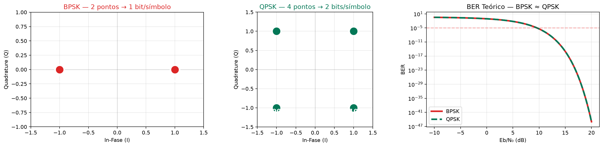
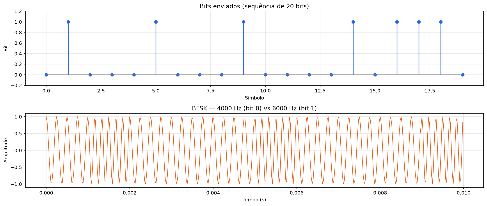
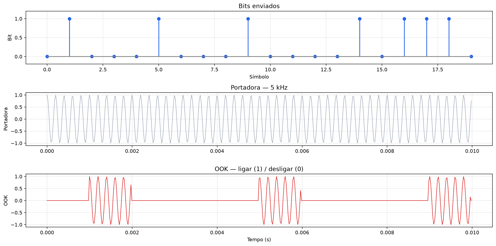
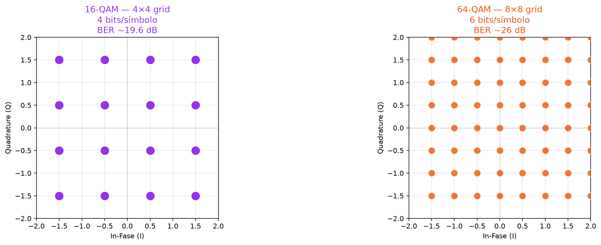
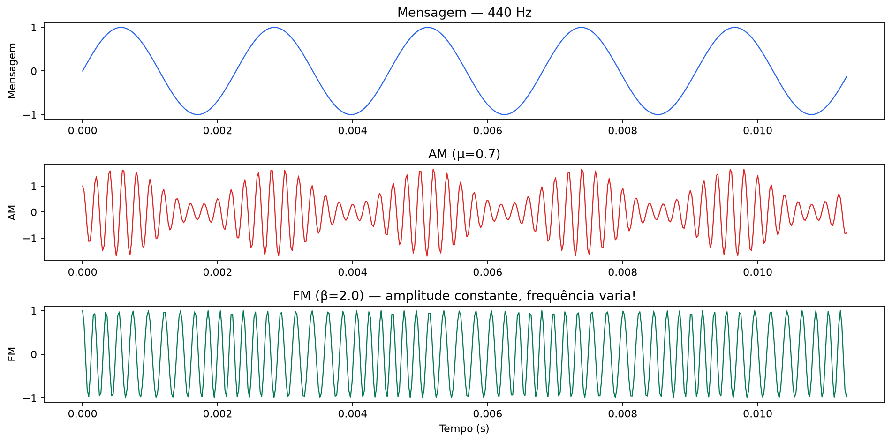
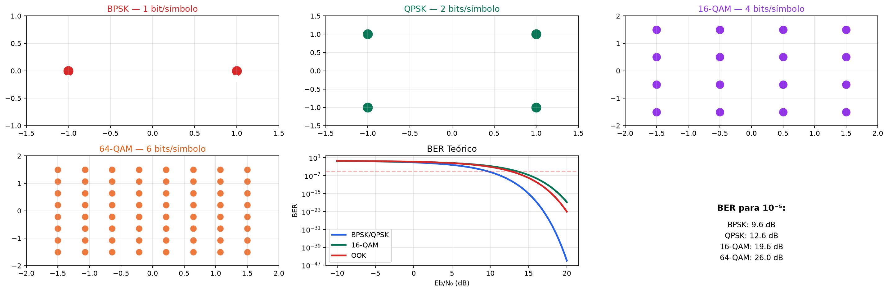

Sistemas de Comunicações
Sumário da Aula
- Apresentação da disciplina
- O que é comunicar?
- A cadeia de comunicação — modelo completo
- Modulação — guia visual
- Experiências Python ao vivo
- Métricas fundamentais
- Roteiro do semestre
- Metodologia e avaliação
Apresentação da Disciplina
Bem-vindo a Sistemas de Comunicações!
Esta disciplina responde a uma pergunta aparentemente simples:
A resposta esconde uma das mais ricas áreas da engenharia.
Por que esta disciplina importa?
- Cada chamada VoIP, vídeo no YouTube, GPS, e-mail — tudo usa sistemas de comunicação
- 5G, Starlink, WiFi 7, satélites LEO — baseiam-se nos conceitos daqui
- A teoria das comunicações é onde matemática pura se traduz em tecnologia tangível que bilhões usam diariamente
A comunicação move o mundo moderno
Praticamente todo valor econômico digital depende de bits atravessando algum canal físico — e alguém precisou projetar esse trecho da jornada.
Comunicação")) Conectividade Internet móvel 4G/5G WiFi doméstico e corporativo Fibra óptica submarina Posicionamento GPS / GNSS Navegação aérea e marítima Espaço Satélites LEO (Starlink) Sondas interplanetárias Infraestrutura crítica Redes elétricas inteligentes IoT industrial Telemedicina Entretenimento Streaming de vídeo/áudio Jogos online
O problema central: recursos são escassos
Todo sistema de comunicação disputa três recursos fundamentais, sempre limitados:
| Recurso | Limitação | Exemplo |
|---|---|---|
| Espectro (Hz) | Regulado, finito, caro | Leilão de espectro 5G: bilhões de dólares |
| Potência (W) | Bateria, regulação, saúde | Celular: poucos watts; sonda espacial: miliwatts |
| Tempo (s) | Latência tolerável | Cirurgia remota: < 10 ms; e-mail: segundos |
Pré-requisitos
| Pré-requisito | Por que importa |
|---|---|
| Cálculo (integrais, Fourier) | Fourier é a linguagem dos sinais |
| Álgebra Linear (vetores, matrizes) | Constelações QAM/PSK são vetores |
| Probabilidade e Estatística | Ruído = processo aleatório |
| Circuitos Elétricos (filtros) | Moduladores = filtros e misturadores |
Ementa e Objetivos
Ementa
Objetivos Gerais
Ao final do semestre, você será capaz de:
- Compreender a cadeia completa de comunicação — da fonte ao destino
- Projetar moduladores e demoduladores (AM, FM, BPSK, QPSK, QAM)
- Analisar o desempenho com ruído (SNR, \(E_b/N_0\), BER)
- Calcular a capacidade máxima de um canal (Shannon)
- Implementar receptores digitais completos em Python
- Projetar equalizadores para combater distorção do canal
- Implementar mecanismos de sincronismo (fase, timing, quadro)
Estrutura do Semestre (80 horas)
| Módulo | Tópico | Aprox. |
|---|---|---|
| I | Introdução a sistemas | ~10h |
| II | Modulação analógica (AM, FM) | ~16h |
| III | Banda base — Nyquist, ISI | ~10h |
| IV | Digital banda passante | ~16h |
| V | Equalização (ZF, MMSE, LMS) | ~10h |
| VI | Sincronismo (Costas, Gardner) | ~10h |
| VII | Códigos corretores de erros | ~8h |
O que é Comunicar?
Definição fundamental
Comunicar é transferir informação de um emissor a um receptor por um meio imperfeito.
Nenhum canal é perfeito. Sempre há:
- Ruído (térmico, interferência, multipercursos)
- Atenuação (o sinal perde força com a distância)
- Distorção (diferentes frequências viajam diferente)
- Interferência (outros transmissores no mesmo espectro)
A arte das comunicações
Exemplos do mundo real
| Sistema | Canal | Modulação | Desafio principal |
|---|---|---|---|
| WiFi (802.11ac) | Rádio multipercursos | 256-QAM | ISI, sincronismo |
| GPS (L1) | Espaço livre, ultra fraco | BPSK | Sensibilidade extrema |
| 5G NR | Urbano/vehicular | OFDM + 64-QAM | Mobilidade, latência |
| Fiber optic | Fibra óptica | PPM / QAM | Dispersão cromática |
| Ham radio | Rádio AM/FM | AM / FM | Ruído, alcance |
A Cadeia de Comunicação
voz, vídeo, dados"]) --> CF["📦 Codif. Fonte
compressão"] subgraph TX["🚀 Transmissor"] CF --> CC["🛡️ Codif. Canal
proteção"] CC --> M["📻 Modulador
adapta ao canal"] end M -->|sinal transmitido| Ch["🌊 CANAL
ruído + interferência"] Ch --> Dm["📻 Demodulador
recupera sinal"] subgraph RX["📥 Receptor"] Dm --> DC["🔍 Decodif. Canal
correção"] DC --> DF["📤 Decodif. Fonte
descompressão"] end DF --> D(["🎧 Destino
reconstrói a mensagem"]) classDef endpoint fill:#dfe6e9,stroke:#636e72,color:#2d3436,font-weight:bold classDef sourceCoder fill:#74b9ff,stroke:#0984e3,color:#ffffff,font-weight:bold classDef channelCoder fill:#a29bfe,stroke:#6c5ce7,color:#ffffff,font-weight:bold classDef modem fill:#55efc4,stroke:#00b894,color:#2d3436,font-weight:bold classDef channel fill:#fd79a8,stroke:#e84393,color:#ffffff,font-weight:bold class F,D endpoint class CF,DF sourceCoder class CC,DC channelCoder class M,Dm modem class Ch channel style TX fill:#dfe6ff20,stroke:#74b9ff,stroke-dasharray: 4 3 style RX fill:#dfe6ff20,stroke:#74b9ff,stroke-dasharray: 4 3
Fonte — Entropia de Shannon
A entropia de Shannon mede a informação contida em uma fonte:
- Moeda justa (\(p=0.5\)): \(H = 1\) bit/símbolo
- Moeda viciada (\(p=0.99\)): \(H \approx 0.08\) bits/símbolo — quase tudo previsível
Codificação de Fonte
Remove redundância.
- Exemplos: Huffman, ZIP, MP3, JPEG
- Objetivo: transmitir a mesma informação com menos bits
Codificação de Canal
Adiciona redundância controlada para proteção.
- Exemplo: código Hamming \((7,4)\) — 4 bits viram 7
- Objetivo: detectar e corrigir erros sem retransmissão
Modulador
Adapta o sinal à banda do canal.
Um sinal de voz (3.4 kHz) não viaja por uma antena de 1 m. Precisamos "carregá-lo" em uma portadora de MHz ou GHz.
Canal
O meio físico: fio, fibra, espaço livre.
Sempre adiciona:
- Atenuação (perda de potência)
- Ruído (aleatório, modelado como Gaussiano)
- Distorção (multipercursos, ISI)
Modulação — Guia Visual Completo
Por que modular?
Modulação é o processo de transladar um sinal de informação (banda base, baixa frequência) para uma faixa de frequências mais alta, centrada em uma portadora \(f_c\). Sem isso, a comunicação moderna simplesmente não existiria.
- Antenas práticas: \(\lambda = c/f\) — áudio 1 kHz → antena de 75 km! Portadora 100 MHz → antena de 0.75 m
- FDM: diferentes transmissores em faixas diferentes (FM 98.1, 101.7 MHz)
- Imunidade a ruído: FM e PSK trocam banda por qualidade
- Eficiência espectral: QAM e OFDM carregam muitos bits por Hertz
- Multiplexação do meio: várias fontes compartilham o mesmo canal físico sem colidir
- Propagação: baixas frequências não atravessam a ionosfera nem viajam bem no espaço livre; altas frequências sim
Antenas: o argumento mais visceral
A antena eficiente tem dimensão da ordem de \(\lambda/4\) a \(\lambda/2\), onde \(\lambda = c/f\).
Modulação também organiza o espectro
Além de viabilizar antenas pequenas, modular permite que múltiplos sinais compartilhem o mesmo meio físico (ar, cabo, fibra) sem se sobrepor — cada estação de rádio, canal de TV ou operadora de celular ocupa sua própria fatia de frequência.
Rádio A"] ESP --> F2["FM 101.7 MHz
Rádio B"] ESP --> F3["Banda 5G n78
3.5 GHz"] ESP --> F4["WiFi
2.4 / 5 GHz"] style ESP fill:#2d3436,stroke:#636e72,color:#ffffff style F1 fill:#ffeaa7,stroke:#fdcb6e,color:#2d3436 style F2 fill:#ffeaa7,stroke:#fdcb6e,color:#2d3436 style F3 fill:#74b9ff,stroke:#0984e3,color:#ffffff style F4 fill:#55efc4,stroke:#00b894,color:#2d3436
Isso é FDM (Frequency Division Multiplexing): cada sinal modulado numa portadora diferente, todos coexistindo sem interferir — desde que respeitem sua faixa alocada.
O que varia?
Modular é codificar informação em uma portadora alterando:
- Amplitude → AM, ASK, QAM
- Frequência → FM, FSK
- Fase → PSK, QAM
Modulações Analógicas — AM
AM Convencional (com portadora)
O que varia: amplitude proporcional à mensagem.
\(\mu\) = índice de modulação (\(0 \le \mu \le 1\) para evitar sobremodulação)
| Propriedade | Valor |
|---|---|
| Banda | \(B = 2f_m\) |
| Potência total | \(P_T = P_c\,(1 + \mu^2/2)\) |
| Eficiência | Máx. 33% (quando \(\mu=1\)) |
| Demodulação | Envelope simples — sem portadora local |
| Imunidade a ruído | Baixa |
| Aplicações | Rádio AM comercial (530–1700 kHz) |
DSB-SC (Carrier Suppressed)
Mesma fórmula, sem portadora — economiza potência.
| Propriedade | Valor |
|---|---|
| Banda | \(B = 2f_m\) |
| Potência | 100% nas bandas laterais |
| Demodulação | Coerente — precisa de portadora local síncrona |
| Problema | Ambiguidade de fase de 180° |
SSB e VSB
SSB (Single Sideband): envia apenas uma banda lateral.
onde \(\hat{m}(t)\) é a transformada de Hilbert.
VSB (Vestigial Sideband): uma banda lateral completa + parte da outra.
| Tipo | Banda | Demodulação | Aplicações |
|---|---|---|---|
| SSB | \(f_m\) (metade!) | Coerente | Rádio amador, HF |
| VSB | \(\approx f_m\) | Coerente (menos crítica) | TV analógica (NTSC, PAL) |
Comparação Visual AM
AM Convencional
- Envelope segue \(m(t)\)
- Portadora sempre presente
- Demodulação simples (diodo)
- Pouco eficiente em potência
DSB-SC
- Zero crossing quando \(m(t)\) cruza zero
- 100% potência nas laterais
- Precisa demodulação coerente
- Mais eficiente em potência
Visualize AM em Python
import numpy as np
import matplotlib.pyplot as plt
fs = 44100
t = np.linspace(0, 0.01, int(0.01 * fs), endpoint=False)
f_msg = 440
f_carrier = 5000
mu = 0.7
m = np.sin(2 * np.pi * f_msg * t)
carrier = np.cos(2 * np.pi * f_carrier * t)
am = (1 + mu * m) * carrier
dsb = m * carrier
fig, axes = plt.subplots(3, 1, figsize=(14, 5))
axes[0].plot(t[:200], m[:200], '#2563eb', lw=1.5)
axes[0].set_ylabel('Mensagem'); axes[0].set_title('Mensagem — 440 Hz'); axes[0].grid(alpha=0.3)
axes[1].plot(t[:200], am[:200], '#dc2626', lw=1.5)
axes[1].set_ylabel('AM'); axes[1].set_title(f'AM Convencional (μ={mu}) — envelope segue m(t)'); axes[1].grid(alpha=0.3)
axes[2].plot(t[:200], dsb[:200], '#047857', lw=1.5)
axes[2].set_xlabel('Tempo (s)'); axes[2].set_ylabel('DSB-SC')
axes[2].set_title('DSB-SC — note os zero-crossings quando m(t) cruza zero'); axes[2].grid(alpha=0.3)
plt.tight_layout(); plt.savefig('am_visual.png', dpi=150, bbox_inches='tight')
print("AM: envelope segue m(t)" )
print("DSB-SC: 100% potência nas laterais (sem portadora)")AM: envelope segue m(t)
DSB-SC: 100% potência nas laterais (sem portadora)
Modulações Analógicas — FM
FM Convencional (Wideband FM)
O que varia: frequência instantânea proporcional à mensagem.
Índice de modulação FM: \(\beta = \Delta f / f_m\)
Regra de Carson
| Propriedade | Valor |
|---|---|
| Banda | \(2f_m(1+\beta)\) — pode ser muito maior que AM |
| Imunidade a ruído | Excelente — receptor rejeita amplitude |
| Ganho de processamento | \(\text{SNR}_{\text{out}} = \frac{3}{2}\beta^2 \cdot \text{SNR}_{\text{in}}\) |
| Efeito limiar | ~10 dB — abaixo disso, colapso catastrófico |
| Aplicações | Rádio FM (88–108 MHz, \(\beta \approx 5\)) |
NBFM vs WBFM
| Propriedade | NBFM | WBFM |
|---|---|---|
| Índice \(\beta\) | \(\ll 1\) (tip. 0.2) | Grande (tip. 5) |
| Banda | \(\approx 2f_m\) | \(\gg 2f_m\) |
| Qualidade de áudio | Voz (3 kHz) | Hi-Fi (15 kHz) |
| Imunidade | Moderada | Excelente |
Visualize FM em Python
import numpy as np
import matplotlib.pyplot as plt
fs = 44100
t = np.linspace(0, 0.005, int(0.005 * fs), endpoint=False)
f_msg = 440
f_carrier = 5000
beta = 2.0
m = np.sin(2 * np.pi * f_msg * t)
carrier = np.cos(2 * np.pi * f_carrier * t)
am = (1 + 0.7 * m) * carrier
fm = np.cos(2 * np.pi * f_carrier * t + beta * np.sin(2 * np.pi * f_msg * t))
fig, axes = plt.subplots(3, 1, figsize=(14, 5))
axes[0].plot(t[:150], m[:150], '#2563eb', lw=1.5)
axes[0].set_ylabel('Mensagem'); axes[0].set_title('Mensagem — 440 Hz'); axes[0].grid(alpha=0.3)
axes[1].plot(t[:150], am[:150], '#dc2626', lw=1.5)
axes[1].set_ylabel('AM'); axes[1].set_title(f'AM (μ=0.7) — amplitude varia'); axes[1].grid(alpha=0.3)
axes[2].plot(t[:150], fm[:150], '#047857', lw=1.5)
axes[2].set_xlabel('Tempo (s)'); axes[2].set_ylabel('FM')
axes[2].set_title(f'FM (β={beta}) — amplitude constante, frequência varia!'); axes[2].grid(alpha=0.3)
plt.tight_layout(); plt.savefig('fm_visual.png', dpi=150, bbox_inches='tight')
print(f"FM: freq. varia entre {f_carrier-beta*f_msg:.0f} e {f_carrier+beta*f_msg:.0f} Hz")
print(f"FM: amplitude = {np.abs(fm).mean():.4f} (quase constante!)")FM: freq. varia entre 4120 e 5880 Hz
FM: amplitude = 0.6417 (quase constante!)
Modulações Digitais — PSK
BPSK (Binary PSK)
2 fases possíveis: \(0\) e \(\pi\).
| Bit | Fase | Portadora |
|---|---|---|
| 0 | \(0\) | \(+\cos(2\pi f_c t)\) |
| 1 | \(\pi\) | \(-\cos(2\pi f_c t)\) |
| Propriedade | Valor |
|---|---|
| Bits/símbolo | \(k = 1\) |
| BER | \(P_b = Q\!\left(\sqrt{\dfrac{2E_b}{N_0}}\right)\) |
| Eb/N₀ para BER=10⁻⁵ | ≈ 9.6 dB |
| Robustez | Máxima |
QPSK (Quadrature PSK)
4 fases: \(\pi/4,\, 3\pi/4,\, 5\pi/4,\, 7\pi/4\) (Gray coding).
| Bits | Fase | Ponto |
|---|---|---|
| 00 | \(\pi/4\) | \((+1, +1)\) |
| 01 | \(3\pi/4\) | \((-1, +1)\) |
| 11 | \(5\pi/4\) | \((-1, -1)\) |
| 10 | \(7\pi/4\) | \((+1, -1)\) |
| Propriedade | Valor |
|---|---|
| Bits/símbolo | \(k = 2\) |
| Eficiência espectral | \(\eta = 1.0\) bit/s/Hz |
| BER | \(P_b \approx Q\!\left(\sqrt{\dfrac{2E_b}{N_0}}\right)\) |
| Eb/N₀ para BER=10⁻⁵ | ≈ 12.6 dB |
M-PSK
Generalização: \(M\) fases equidistantes (\(2\pi/M\)).
| M | \(k\) | Eb/N₀ para BER=10⁻⁵ |
|---|---|---|
| 2 (BPSK) | 1 | 9.6 dB |
| 4 (QPSK) | 2 | 12.6 dB |
| 8 | 3 | 16.3 dB |
| 16 | 4 | 19.6 dB |
Visualize PSK em Python
import numpy as np
import matplotlib.pyplot as plt
fig, axes = plt.subplots(1, 3, figsize=(16, 4))
# BPSK constelação
ax = axes[0]
ax.scatter([-1], [0], s=300, c='#dc2626', edgecolors='white', linewidth=3, zorder=3)
ax.scatter([1], [0], s=300, c='#dc2626', edgecolors='white', linewidth=3, zorder=3)
ax.text(-1, -0.2, '0 (π)', ha='center', fontsize=14, weight='bold', color='white')
ax.text(1, -0.2, '1 (0)', ha='center', fontsize=14, weight='bold', color='white')
ax.set_xlim(-1.5, 1.5); ax.set_ylim(-1, 1)
ax.axhline(0, color='gray', lw=0.5, alpha=0.5); ax.axvline(0, color='gray', lw=0.5, alpha=0.5)
ax.set_xlabel('In-Fase (I)'); ax.set_ylabel('Quadrature (Q)')
ax.set_title('BPSK — 2 pontos → 1 bit/símbolo', color='#dc2626'); ax.grid(alpha=0.3); ax.set_aspect('equal')
# QPSK constelação
ax = axes[1]
pts = np.array([[-1,-1], [-1,1], [1,1], [1,-1]])
ax.scatter(pts[:, 0], pts[:, 1], s=300, c='#047857', edgecolors='white', linewidth=3, zorder=3)
for (x, y), lbl in zip(pts, ['00', '01', '11', '10']):
ax.text(x, y*1.15, lbl, ha='center', fontsize=12, weight='bold', color='white')
ax.set_xlim(-1.5, 1.5); ax.set_ylim(-1.5, 1.5)
ax.axhline(0, color='gray', lw=0.5, alpha=0.5); ax.axvline(0, color='gray', lw=0.5, alpha=0.5)
ax.set_xlabel('In-Fase (I)'); ax.set_ylabel('Quadrature (Q)')
ax.set_title('QPSK — 4 pontos → 2 bits/símbolo', color='#047857'); ax.grid(alpha=0.3); ax.set_aspect('equal')
# BER comparison
ax = axes[2]
from scipy.special import erfc
EbN0_lin = np.logspace(-1, 2, 500)
EbN0_dB = 10 * np.log10(EbN0_lin)
ax.semilogy(EbN0_dB, 0.5*erfc(np.sqrt(EbN0_lin)), lw=3, label='BPSK', color='#dc2626')
ax.semilogy(EbN0_dB, 0.5*erfc(np.sqrt(EbN0_lin)), lw=3, ls='--', label='QPSK', color='#047857')
ax.axhline(1e-5, color='red', ls='--', alpha=0.3)
ax.set_xlabel('Eb/N₀ (dB)'); ax.set_ylabel('BER')
ax.set_title('BER Teórico — BPSK ≈ QPSK'); ax.legend(); ax.grid(True, alpha=0.3, which='both')
plt.tight_layout(); plt.savefig('psk_visual.png', dpi=150, bbox_inches='tight')
print("BPSK: 2 pontos → robusto")
print("QPSK: 4 pontos → 2x mais bits/símbolo")BPSK: 2 pontos → robusto
QPSK: 4 pontos → 2x mais bits/símbolo
Modulações Digitais — FSK
BFSK (Binary FSK)
| Bit | Frequência |
|---|---|
| 0 | \(f_0 = f_c - \Delta f\) |
| 1 | \(f_1 = f_c + \Delta f\) |
| Propriedade | Valor |
|---|---|
| Banda | \(B \approx 2\Delta f + 2/T_b\) |
| Coerente | \(P_b = Q\!\left(\sqrt{\dfrac{E_b}{N_0}}\right)\) |
| Não-coerente | \(P_b = \tfrac{1}{2}\exp\!\left(-\dfrac{E_b}{2N_0}\right)\) |
| Custo vs BPSK | ~3 dB pior (coerente) |
Visualize FSK em Python
import numpy as np
import matplotlib.pyplot as plt
fs = 44100
t = np.linspace(0, 0.02, int(0.02 * fs), endpoint=False)
f0 = 4000
f1 = 6000
np.random.seed(42)
bits = np.random.randint(0, 2, 20)
s0 = np.cos(2 * np.pi * f0 * t)
s1 = np.cos(2 * np.pi * f1 * t)
fsk = np.zeros_like(t)
step = len(t) // len(bits)
for i, bit in enumerate(bits):
start = i * step
end = min((i + 1) * step, len(t))
fsk[start:end] = s0[start:end] if bit == 0 else s1[start:end]
fig, axes = plt.subplots(2, 1, figsize=(14, 6))
ax = axes[0]
ax.stem(range(len(bits)), bits, linefmt='#2563eb', markerfmt='o', basefmt='gray')
ax.set_xlabel('Símbolo'); ax.set_ylabel('Bit')
ax.set_title('Bits enviados (sequência de 20 bits)')
ax.set_ylim(-0.2, 1.2); ax.grid(alpha=0.3)
ax = axes[1]
t_short = np.linspace(0, 0.01, int(0.01 * fs), endpoint=False)
ax.plot(t_short, fsk[:len(t_short)], '#ea580c', lw=1)
ax.set_xlabel('Tempo (s)'); ax.set_ylabel('Amplitude')
ax.set_title(f'BFSK — {f0} Hz (bit 0) vs {f1} Hz (bit 1)')
ax.grid(alpha=0.3)
plt.tight_layout(); plt.savefig('bfsk_visual.png', dpi=150, bbox_inches='tight')
print(f"BFSK: bit 0 → {f0} Hz, bit 1 → {f1} Hz")
print("spacing:", abs(f1-f0), "Hz")BFSK: bit 0 → 4000 Hz, bit 1 → 6000 Hz
spacing: 2000 Hz
Modulações Digitais — ASK / OOK
OOK (On-Off Keying)
| Bit | Sinal |
|---|---|
| 0 | \(0\) (sem transmissão) |
| 1 | \(A_c\cos(2\pi f_c t)\) |
| Propriedade | Valor |
|---|---|
| Custo vs BPSK | ~3 dB pior |
| Simplicidade | Máxima — basta ligar/desligar |
| Aplicações | Controle remoto IR, fibra óptica, RFID passivo |
Visualize OOK em Python
import numpy as np
import matplotlib.pyplot as plt
fs = 44100
t = np.linspace(0, 0.02, int(0.02 * fs), endpoint=False)
fc = 5000
carrier = np.cos(2 * np.pi * fc * t)
np.random.seed(42)
bits = np.random.randint(0, 2, 20)
ook = np.zeros_like(t)
step = len(t) // len(bits)
for i, bit in enumerate(bits):
start = i * step
end = min((i + 1) * step, len(t))
ook[start:end] = bits[i] * carrier[start:end]
fig, axes = plt.subplots(3, 1, figsize=(14, 7))
ax = axes[0]
ax.stem(range(len(bits)), bits, linefmt='#2563eb', markerfmt='o', basefmt='gray')
ax.set_xlabel('Símbolo'); ax.set_ylabel('Bit')
ax.set_title('Bits enviados')
ax.set_ylim(-0.2, 1.2); ax.grid(alpha=0.3)
ax = axes[1]
t_short = np.linspace(0, 0.01, int(0.01 * fs), endpoint=False)
ax.plot(t_short, carrier[:len(t_short)], '#64748b', lw=0.8, alpha=0.7)
ax.set_ylabel('Portadora')
ax.set_title('Portadora — 5 kHz'); ax.grid(alpha=0.3)
ax = axes[2]
t_short = np.linspace(0, 0.01, int(0.01 * fs), endpoint=False)
ax.plot(t_short, ook[:len(t_short)], '#dc2626', lw=1)
ax.set_xlabel('Tempo (s)'); ax.set_ylabel('OOK')
ax.set_title('OOK — ligar (1) / desligar (0)'); ax.grid(alpha=0.3)
plt.tight_layout(); plt.savefig('ook_visual.png', dpi=150, bbox_inches='tight')
print("OOK: bit 1 → portadora ON, bit 0 → OFF")
print("BER pior que BPSK por ~3 dB")OOK: bit 1 → portadora ON, bit 0 → OFF
BER pior que BPSK por ~3 dB
Modulações Digitais — QAM
M-QAM Quadrada
Grid \(\sqrt{M} \times \sqrt{M}\) no plano I/Q.
| M | Nome | Grid | Bits/símbolo | Eb/N₀ BER=10⁻⁵ |
|---|---|---|---|---|
| 4 | 4-QAM (= QPSK) | 2×2 | 2 | ~12.6 dB |
| 16 | 16-QAM | 4×4 | 4 | ~19.6 dB |
| 64 | 64-QAM | 8×8 | 6 | ~26 dB |
| 256 | 256-QAM | 16×16 | 8 | ~32 dB |
| 1024 | 1024-QAM | 32×32 | 10 | ~38 dB |
BER aproximada:
Visualize QAM em Python
import numpy as np
import matplotlib.pyplot as plt
fig, axes = plt.subplots(1, 2, figsize=(16, 5))
ax = axes[0]
levels_16 = np.array([-1.5, -0.5, 0.5, 1.5])
ii, jj = np.meshgrid(levels_16, levels_16)
pts_16 = np.column_stack([ii.ravel(), jj.ravel()])
ax.scatter(pts_16[:, 0], pts_16[:, 1], s=200, c='#9333ea', edgecolors='white', lw=2, zorder=3)
ax.set_xlim(-2, 2); ax.set_ylim(-2, 2)
ax.axhline(0, color='gray', lw=0.5, alpha=0.5); ax.axvline(0, color='gray', lw=0.5, alpha=0.5)
ax.set_xlabel('In-Fase (I)'); ax.set_ylabel('Quadrature (Q)')
ax.set_title('16-QAM — 4×4 grid\n4 bits/símbolo\nBER ~19.6 dB', color='#9333ea')
ax.grid(alpha=0.3); ax.set_aspect('equal')
ax = axes[1]
levels_64 = np.array([-3, -2, -1, 0, 1, 2, 3, 4]) * 0.5
ii, jj = np.meshgrid(levels_64, levels_64)
pts_64 = np.column_stack([ii.ravel(), jj.ravel()])
ax.scatter(pts_64[:, 0], pts_64[:, 1], s=100, c='#ea580c', edgecolors='white', lw=0.8, alpha=0.8, zorder=3)
ax.set_xlim(-2, 2); ax.set_ylim(-2, 2)
ax.axhline(0, color='gray', lw=0.5, alpha=0.5); ax.axvline(0, color='gray', lw=0.5, alpha=0.5)
ax.set_xlabel('In-Fase (I)'); ax.set_ylabel('Quadrature (Q)')
ax.set_title('64-QAM — 8×8 grid\n6 bits/símbolo\nBER ~26 dB', color='#ea580c')
ax.grid(alpha=0.3); ax.set_aspect('equal')
plt.tight_layout(); plt.savefig('qam_constellations.png', dpi=150, bbox_inches='tight')
print(f"16-QAM: {len(pts_16)} pontos → 4 bits/símbolo → Eb/N₀ ~19.6 dB")
print(f"64-QAM: {len(pts_64)} pontos → 6 bits/símbolo → Eb/N₀ ~26 dB")
print("Quanto mais pontos, mais sensível a ruído!")16-QAM: 16 pontos → 4 bits/símbolo → Eb/N₀ ~19.6 dB
64-QAM: 64 pontos → 6 bits/símbolo → Eb/N₀ ~26 dB
Quanto mais pontos, mais sensível a ruído!
Tabela Comparativa
| Modulação | Tipo | O que varia | Eb/N₀ BER=10⁻⁵ | Eficiência |
|---|---|---|---|---|
| AM conv | Analógica | Amplitude | — | 33% pot. |
| SSB | Analógica | Amplitude | — | 100% pot. |
| WBFM | Analógica | Frequência | — | Excelente ruído |
| OOK | Digital | Amplitude | ~12.6 dB | 0.5 b/s/Hz |
| BPSK | Digital | Fase | 9.6 dB | 0.5 b/s/Hz |
| QPSK | Digital | Fase+Ampl. | 12.6 dB | 1.0 b/s/Hz |
| 16-QAM | Digital | Fase+Ampl. | ~19.6 dB | 4.0 b/s/Hz |
| 64-QAM | Digital | Fase+Ampl. | ~26 dB | 6.0 b/s/Hz |
| 256-QAM | Digital | Fase+Ampl. | ~32 dB | 8.0 b/s/Hz |
O Grande Trade-off
(bits/s/Hz)"] Ro["🛡️ Robustez
(imunidade a ruído)"] Si["🔧 Simplicidade
(custo de implementação)"] Ro <-->|"trade-off"| Ef Ef <-->|"trade-off"| Si Ro <-->|"trade-off"| Si style Ef fill:#74b9ff,stroke:#0984e3,color:#ffffff style Ro fill:#55efc4,stroke:#00b894,color:#2d3436 style Si fill:#ffeaa7,stroke:#fdcb6e,color:#2d3436
- BPSK: máximo em robustez, mínimo em eficiência
- 256-QAM: máximo em eficiência, mínimo em robustez
- QPSK: o "ponto doce" — bom equilíbrio
Experiências Python ao Vivo
import numpy as np
import matplotlib.pyplot as plt
fs = 44100
t = np.linspace(0, 0.05, int(0.05 * fs), endpoint=False)
f_msg = 440
f_carrier = 5000
mu = 0.7
beta = 2.0
m = np.sin(2 * np.pi * f_msg * t)
carrier = np.cos(2 * np.pi * f_carrier * t)
am = (1 + mu * m) * carrier
fm = np.cos(2 * np.pi * f_carrier * t + beta * np.sin(2 * np.pi * f_msg * t))
fig, axes = plt.subplots(3, 1, figsize=(12, 6))
axes[0].plot(t[:500], m[:500], '#2563eb', lw=1)
axes[0].set_ylabel('Mensagem'); axes[0].set_title(f'Mensagem — {f_msg} Hz')
axes[1].plot(t[:500], am[:500], '#dc2626', lw=1)
axes[1].set_ylabel('AM'); axes[1].set_title(f'AM (μ={mu})')
axes[2].plot(t[:500], fm[:500], '#047857', lw=1)
axes[2].set_xlabel('Tempo (s)'); axes[2].set_ylabel('FM')
axes[2].set_title(f'FM (β={beta}) — amplitude constante, frequência varia!')
plt.tight_layout()
plt.savefig('am_vs_dsb.png', dpi=150, bbox_inches='tight')
print("AM: envelope segue m(t)")
print(f"FM: freq. varia entre {f_carrier-beta*f_msg:.0f} e {f_carrier+beta*f_msg:.0f} Hz")AM: envelope segue m(t)
FM: freq. varia entre 4120 e 5880 Hz
import numpy as np
import matplotlib.pyplot as plt
from scipy.special import erfc
np.random.seed(42)
fig, axes = plt.subplots(2, 3, figsize=(18, 6))
# Constelações
ax = axes[0, 0]
ax.scatter([-1], [0], s=300, c='#dc2626', ec='white', lw=3)
ax.text(-1, -0.2, '0', ha='center', fontsize=14, weight='bold', color='white')
ax.scatter([1], [0], s=300, c='#dc2626', ec='white', lw=3)
ax.text(1, -0.2, '1', ha='center', fontsize=14, weight='bold', color='white')
ax.set_xlim(-1.5, 1.5); ax.set_ylim(-1, 1)
ax.set_title('BPSK — 1 bit/símbolo', color='#dc2626'); ax.grid(alpha=0.3)
ax = axes[0, 1]
pts = np.array([[-1,-1], [-1,1], [1,1], [1,-1]])
ax.scatter(pts[:, 0], pts[:, 1], s=300, c='#047857', ec='white', lw=3)
ax.set_xlim(-1.5, 1.5); ax.set_ylim(-1.5, 1.5)
ax.set_title('QPSK — 2 bits/símbolo', color='#047857'); ax.grid(alpha=0.3)
ax = axes[0, 2]
levels = np.array([-1.5, -0.5, 0.5, 1.5])
ii, jj = np.meshgrid(levels, levels)
ax.scatter(ii.ravel(), jj.ravel(), s=200, c='#9333ea', ec='white', lw=2)
ax.set_xlim(-2, 2); ax.set_ylim(-2, 2)
ax.set_title('16-QAM — 4 bits/símbolo', color='#9333ea'); ax.grid(alpha=0.3)
ax = axes[1, 0]
levels64 = np.linspace(-3, 3, 8) * 0.5
ii, jj = np.meshgrid(levels64, levels64)
ax.scatter(ii.ravel(), jj.ravel(), s=100, c='#ea580c', ec='white', lw=0.8, alpha=0.8)
ax.set_xlim(-2, 2); ax.set_ylim(-2, 2)
ax.set_title('64-QAM — 6 bits/símbolo', color='#ea580c'); ax.grid(alpha=0.3)
ax = axes[1, 1]
EbN0_lin = np.logspace(-1, 2, 500)
EbN0_dB = 10 * np.log10(EbN0_lin)
ax.semilogy(EbN0_dB, 0.5*erfc(np.sqrt(EbN0_lin)), lw=2.5, label='BPSK/QPSK', color='#2563eb')
ax.semilogy(EbN0_dB, (3/8)*erfc(np.sqrt(0.4*EbN0_lin)), lw=2.5, label='16-QAM', color='#047857')
ax.semilogy(EbN0_dB, 0.5*erfc(np.sqrt(EbN0_lin/2)), lw=2.5, label='OOK', color='#dc2626')
ax.axhline(1e-5, color='red', ls='--', alpha=0.3)
ax.set_xlabel('Eb/N₀ (dB)'); ax.set_ylabel('BER')
ax.set_title('BER Teórico'); ax.legend(); ax.grid(True, alpha=0.3, which='both')
ax = axes[1, 2]
ax.text(0.5, 0.5, 'BER para 10⁻⁵:', ha='center', fontsize=12, weight='bold', transform=ax.transAxes)
ax.text(0.5, 0.35, 'BPSK: 9.6 dB', ha='center', fontsize=11, transform=ax.transAxes)
ax.text(0.5, 0.25, 'QPSK: 12.6 dB', ha='center', fontsize=11, transform=ax.transAxes)
ax.text(0.5, 0.15, '16-QAM: 19.6 dB', ha='center', fontsize=11, transform=ax.transAxes)
ax.text(0.5, 0.05, '64-QAM: 26.0 dB', ha='center', fontsize=11, transform=ax.transAxes)
ax.set_axis_off()
plt.tight_layout()
plt.savefig('todas_modulacoes.png', dpi=150, bbox_inches='tight')
print("Constelações e BER geradas!")Constelações e BER geradas!
import numpy as np
fs = 44100
t = np.linspace(0, 0.05, int(0.05 * fs))
f_msg, f_carrier = 440, 5000
mu, beta = 0.7, 2.0
m = np.sin(2*np.pi*f_msg*t)
am = (1 + mu*m) * np.cos(2*np.pi*f_carrier*t)
fm = np.cos(2*np.pi*f_carrier*t + beta*np.sin(2*np.pi*f_msg*t))
N = len(t)
f = np.fft.fftfreq(N, 1/fs)
am_fft = 2/N * np.abs(np.fft.fft(f > 0))
fm_fft = 2/N * np.abs(np.fft.fft(f > 0))
print(f"AM: 3 picos — portadora + LSB + USB")
print(f"FM: Múltiplas laterais (Bessel)")
print(f"Banda FM ≈ 2·f_msg·(1+β) = {2*f_msg*(1+beta)} Hz")AM: 3 picos — portadora + LSB + USB
FM: Múltiplas laterais (Bessel)
Banda FM ≈ 2·f_msg·(1+β) = 2640.0 Hzimport numpy as np
np.random.seed(42)
fs = 44100
t = np.linspace(0, 0.02, int(0.02 * fs))
s = np.cos(2*np.pi*5000*t)
for snr in [20, 10, 3, -3]:
sigma = np.sqrt(0.5 / 10**(snr/10))
n = np.random.normal(0, sigma, len(t))
r = s + n
print(f"SNR={snr:3d} dB → σ={sigma:.4f} — sinal {'limpo' if snr>10 else 'visível' if snr>0 else 'perdido'} no ruído")SNR= 20 dB → σ=0.0707 — sinal limpo no ruído
SNR= 10 dB → σ=0.2236 — sinal visível no ruído
SNR= 3 dB → σ=0.5006 — sinal visível no ruído
SNR= -3 dB → σ=0.9988 — sinal perdido no ruído| SNR | Estado do sinal |
|---|---|
| 20 dB | Praticamente limpo |
| 10 dB | Ruído visível |
| 3 dB | Quase invisível |
| −3 dB | Mais fraco que o ruído — impossível sem código |
Métricas Fundamentais
As grandezas que importam
| Grandeza | Símbolo | Fórmula | O que diz |
|---|---|---|---|
| Taxa de bits | \(R_b\) | bits/s | Quantos bits enviamos |
| Taxa de símbolo | \(R_s\) | \(1/T_s\) | Quantos símbolos/enviamos |
| Eficiência espectral | \(\eta\) | \(R_b/B\) | Bits/Hertz |
| SNR | — | \(P_s/P_n\) | Sinal vs. ruído |
| Eb/N₀ | — | SNR/\(\eta\) | Energia/bit — universal! |
| BER | \(P_b\) | — | Fraction de bits errados |
| Capacidade | \(C\) | \(B\log_2(1+\text{SNR})\) | Limite supremo |
Eb/N₀ é universal
Independentemente da modulação ou banda, podemos comparar sistemas com \(E_b/N_0\).
A Taxa de Nyquist
Quantos símbolos por segundo cabem num canal?
Todo canal tem uma largura de banda finita \(B\) (Hz). Isso limita quão rápido os símbolos podem se suceder sem que um "borre" no outro — fenômeno chamado Interferência Intersimbólica (ISI).
Critério de Nyquist (versão prática): um canal ideal com largura de banda \(B\) suporta, no máximo,
sem gerar ISI. Essa taxa é a taxa de Nyquist, e \(B_N = R_s/2\) é a banda de Nyquist.
Por que existe esse limite?
Pense em pulsos retangulares no tempo — cada um representando um símbolo. Quanto mais estreito o pulso (mais rápido a taxa de símbolos), mais largo seu espectro em frequência (\(\Delta t \cdot \Delta f \gtrsim 1\)). Um canal com banda \(B\) limitada não deixa passar pulsos arbitrariamente estreitos sem distorcê-los — e essa distorção é o que gera ISI.
(T_s pequeno)"] --> F["📶 Espectro mais largo
(precisa de mais B)"] F --> C{"Canal tem
banda B suficiente?"} C -->|Sim| OK["✅ Sem ISI"] C -->|Não| ISI["⚠️ Pulsos se sobrepõem
→ ISI"] style T fill:#74b9ff,stroke:#0984e3,color:#ffffff style F fill:#a29bfe,stroke:#6c5ce7,color:#ffffff style OK fill:#55efc4,stroke:#00b894,color:#2d3436 style ISI fill:#fd79a8,stroke:#e84393,color:#ffffff
Da taxa de símbolo à taxa de bits
Cada símbolo carrega \(k = \log_2 M\) bits (onde \(M\) é o número de símbolos da constelação). Logo:
| Modulação | \(M\) | \(k=\log_2 M\) | \(R_b\) máx. (com \(B\) fixo) |
|---|---|---|---|
| BPSK | 2 | 1 | \(2B\) |
| QPSK | 4 | 2 | \(4B\) |
| 16-QAM | 16 | 4 | \(8B\) |
| 64-QAM | 64 | 6 | \(12B\) |
Nyquist vs. Shannon — não confundir
| Nyquist | Shannon | |
|---|---|---|
| Pergunta | Quantos símbolos/s cabem em \(B\)? | Quantos bits/s cabem com um dado SNR? |
| Considera ruído? | Não | Sim |
| Resultado | \(R_s^{\max} = 2B\) | \(C = B\log_2(1+\text{SNR})\) |
| Natureza | Limite geométrico (pulso vs. banda) | Limite de informação (capacidade do canal) |
Limites de Shannon
Limite de Shannon-Hartley
O limite fundamental de energia
| Sistema | Gap Shannon |
|---|---|
| BPSK | 1.59 dB do limite |
| Turbo codes | ~0.7 dB do limite |
| LDPC | ~0.2 dB do limite |
Roteiro do Semestre
Plano de Aulas
| Semana | Tema | Atividade |
|---|---|---|
| 1 | Aula inaugural | Experimentos 1–6 ✅ |
| 2 | Fourier, PSD, ruído térmico | Lab: FFT e espectro |
| 3 | Orçamento de enlace, Friis | Lab: link budget |
| 4 | AM — DSB-SC, envelope | Lab: modular/demodular AM |
| 5 | AM — SSB, VSB | Lab: SSB com Hilbert |
| 6 | FM — Bessel, Carson, PLL | Lab: FM com PLL |
| 7 | Nyquist, ISI, raised cosine | Lab: olho digital |
| 8 | Prova 1 (sems 1–7) | |
| 9–11 | Digital — PSK, FSK, QAM | Lab: constelações, BER |
| 12–13 | Equalização — ZF, MMSE, LMS | Lab: equalizar canal |
| 14 | Sincronismo — Costas, Gardner | Lab: loops de fase |
| 15 | Códigos — Hamming, Viterbi | Lab: decoder Viterbi |
| 16 | Projeto final | Apresentação |
| 17 | Prova 2 + revisão |
Metodologia e Avaliação
Como funciona
| Componente | Peso | Descrição |
|---|---|---|
| Prova teórica 1 | 30% | Semanas 1–7 |
| Prova teórica 2 | 30% | Semanas 9–16 |
| Laboratórios | 20% | 8 relatórios Python |
| Projeto final | 20% | Receptor digital completo |
# Ambiente recomendado
python==3.12
numpy>=1.26
scipy>=1.13
matplotlib>=3.9Laboratórios — Boas práticas
- NumPy para operações vetoriais
- SciPy para filtros e funções especiais
- Matplotlib para constelações, espectros, BER
- Seed fixo (
np.random.seed(42)) para reprodutibilidade - Sempre formular uma previsão antes de rodar — depois compare!
Projeto Integrador
No final do semestre, implementaremos um receptor digital completo:
- Modulador QPSK/16-QAM
- Canal AWGN + multipercursos
- Demodulador coerente
- Equalizador LMS
- Frame synchronization
- BER vs. Eb/N₀
Referências
| Livro | Autor | Uso principal |
|---|---|---|
| Digital Communications | Proakis & Salehi | Teoremas, BER, constelações |
| Communication Systems | Haykin | Introdução, FM, AM |
| Digital Communications | Sklar | Prática, Monte Carlo |
| Wireless Communications | Goldsmith | Fading, OFDM |
Exercício de Fixação
Questão 1
Um sistema opera com \(B = 10\) MHz e SNR = 30 dB. Qual a capacidade máxima de Shannon?
Questão 2
Você precisa transmitir vídeo HD a 20 Mbit/s. Qual a banda mínima necessária com:
a) BPSK?
b) 64-QAM?
Questão 3
Um receptor tem:
- LNA: \(G = 20\) dB, \(NF = 1.5\) dB
- Mixer: \(G = -5\) dB, \(NF = 8\) dB
- IF Amp: \(G = 15\) dB, \(NF = 4\) dB
Qual a figura de ruído total? (Friis em cascata)
Questão 4
Qual a diferença entre AM e FM em:
a) O que varia no sinal?
b) Imunidade a ruído?
c) Largura de banda?
Documento gerado para a aula inaugural de Sistemas de Comunicações — UFSC 2026/2
Prof. Laio Oriel Seman